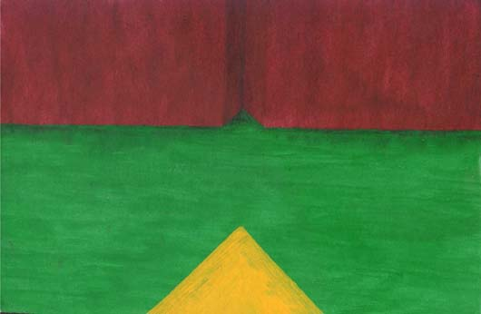

The Separation of Consciousness from the Body's Shell
in Form of a Rowboat Exiting the Face Backwards
by Jerome Veith
This work is protected by copyright.
It is reproduced here with the author's permission.

| This painting is a direct mental snapshot from a vision induced by Salvia
divinorum. The music accompanying the trip was Jungle Monkeys, by J.C.
Mendizabal. The picture as a whole represents the detachment of the soul/consciousness
from the shell of the body, and its journey to the depths of the
subconscious. The vessel at the bottom is gliding backwards on the stilled waters of the
mind(I forgot to paint ripples in them). The structure it is backing away
from is the body, more specifically the inside of the skull. The
indentation in the wall is where the soul locks in place and finds contact
with the outside world(reality). Physically, this could be the nose or the
face as a whole. I think this image has a lot of energy. The colors don't agitate too much;
instead it seems they actually convey a feeling of harmony and creativity.
On the technique: since I was in a hurry to get the vision down, I just
grabbed a piece of cardboard and drew the lines. Both the crimson and the
yellow ochre are oils, the green is acrylic. |
|